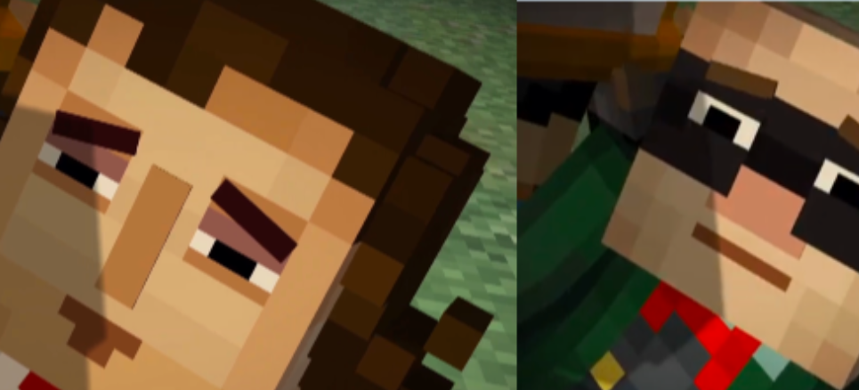
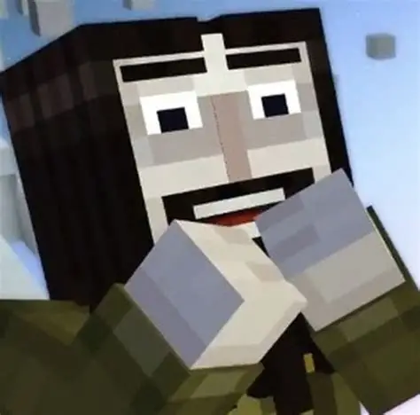

Soren
Soren the Architect, more commonly referred to as Soren, is the leader of the Old Order of the Stone and a central character in the first season of Minecraft: Story Mode. Renowned as a legendary architect, hence his name, he is the discoverer of the Command Block, and the creator the Order's Amulet.

Magnus
Magnus the Rogue, more commonly referred to as Magnus, is the griefer of The Order of the Stone and a major character in Minecraft: Story Mode. He is voiced by Corey Feldman. He first appeared in "The Order of the Stone" for a brief moment in a flashback, and physically appeared in "Assembly Required".
Ellegaard
Ellegaard the Redstone Engineer, more commonly referred to as Ellegaard or Ellie, is a Redstonist, a member of The Order of the Stone and a major character in the first season of Minecraft: Story Mode. She is voiced by Erin Grey Van Oosbree "Grey DeLisle-Grey Griffin".

Gabriel
Gabriel the Warrior more commonly referred to as Gabriel, is an overarching protagonist of Minecraft: Story Mode. He was a former member of The Order of the Stone, a group of legendary heroes who falsified their legacy. He was considered by many to be the greatest warrior of all time. Gabriel was voiced by Dave Fennoy and he makes his first appearance in "The Order of The Stone".
Ivor
Ivor is a major character in Minecraft: Story Mode. He firstly appears as the former secondary antagonist of Season Pass, the central antagonist of the first episode "The Order of the Stone", the main antagonist of the second episode "Assembly Required", the opening antagonist of episode 3 "The Last Place You Look", a major character in the fourth episode "A Block and a Hard Place", the tetartagonist of the Adventure Pass, and a supporting character in Season 2.He is a disgruntled former member of The Order of the Stone who quit due to their lies. In retaliation, Ivor spawned the Wither Storm to prove that the Order are frauds. After redeeming himself, he becomes a good mentor to Jesse. he also becomes a ninja in minecraft story mode season 2, where you get the iconic line "IM A NINJA NOW JESSIE"
